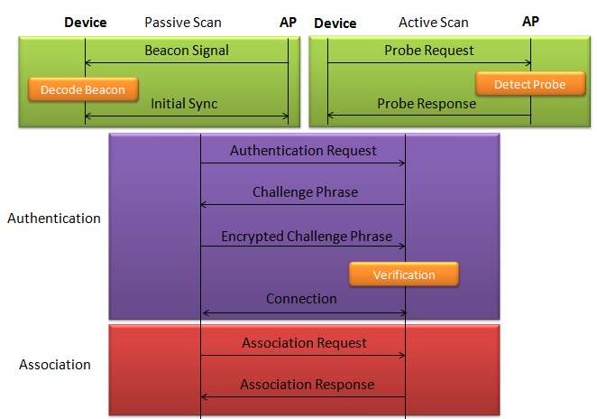
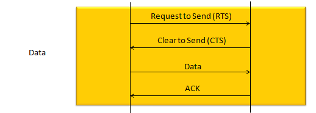
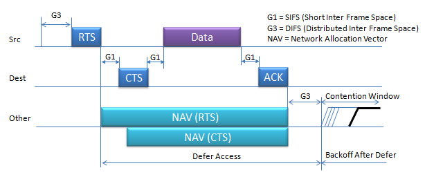
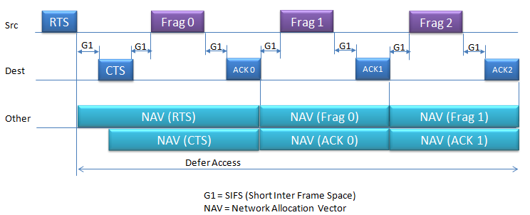
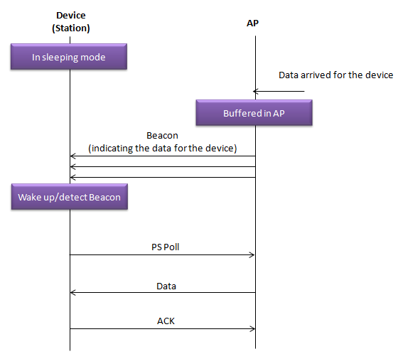

|
WLAN - Protocol Home : www.sharetechnote.com |
|
There are a couple of different mode of WLAN operation. Following is the protocol sequence for the case we commonly use where we have an AP(Access Point) and the Device(client PC or Smart phone WLAN) gets connected to the access point.
The AP is periodically transmitting (broadcasting) a special signal called Beacon signal saying "I am here.. I am here .. I am capable of this and that .. etc)". Basically this Beacon is like MIB/SIB + Physical Layer Sync channel in mobile communication (e.g, WCDMA/LTE etc). AP broadcast this Beacon several times per seconds. Beacon transmission interval is contained in one of Beacon information fields. (See Beacon data field)
When you turn on WLAN on your PC or Smart phone, the device first detect and decode this beacon signal and establish physical synchronization. After the physical Sync get established, the device and WLAN network goes through the authentication process and then association process which is similar concept to the registration process in mobile phone communication. Speaking of scanning, there are two types of scanning. One is called Passive Scan and the other one is called Active Scan. As shown below, in Passive Scan the device scans and detect Beacon signal from AP and establish the sync based on the Beacon signal. In Active Scan mode, device broadcast Probe Request to all the APs (or any specific AP), if there is any AP that detect the probe request, it sends Probe Response to the device.

Once they went through Authentication and Association process, now the device can send and receive user data. Here comes a tricky issues for packet transaction especially when a party tries to transmit something. WLAN does not have concept of dedicated channel (e.g, as in UMTS mobile communication) and it does not have any well designed physical/MAC layer scheduing for each separate user. Basically they are allowed to transmit anytime they like, but in reality a device cannot transmit any time. If it transmit some data while another device is sending data, the data may get lost in the air or it would cause the data for other device get lost since the transmission from the two device would interfer each other. We need some special technique to prevent this problem happening. In Wired LAN, we use a techniq called CSMA/CD and in WLAN we use another technique called CSMA/CA. For the details of these technique, i will write a separate section.. but the goal/purpose of the technique is to make it sure that a device transmit the data when no other device is transmitting anything. The techniqu that WLAN is using to transmit data without interfering other's is as shown below. The concept is simple. a device (let's call this a source device) send a short signal called RTS to another device (let's call this a destination device). If destination device successfully got the RTS, it is supposed to send CTS. If the source device successfully detect/decode the CTS, it transmit the main data. if the data is successfully recieved/decoded by the destication device, the destination device send 'ACK'. For each and every packet transmission, this process repeats.

More detailed process of this data tranmission in terms of timing can be illustrated as shown below. i) Source transmit the short RTS burst which carries source, destination and duration of following transaction. ii) All other devices around the source may receive the RTS burst. They are all checking if the RTS is for itself or not. iii) If it is for itself and the medium is free, the destination device transmit the CTS which also carries the duration of following transaction. iv) Now all the other device (the neighbouring device other than 'Destination' device) also knows that the medium will be occupied for a certain time from now, they would set their NAV(Network Allocation Vector) accordingly so that it would not try sensing and try to transmit anything during that period.

In case of Fragmented Frame, the sequence goes as follows :

Sleeping Mode and Data Transmission

|